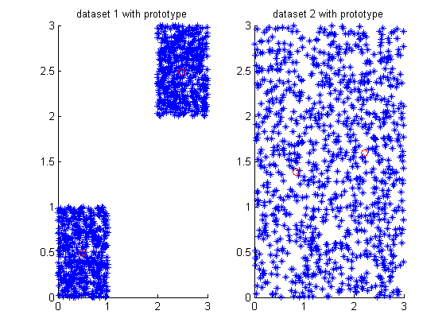
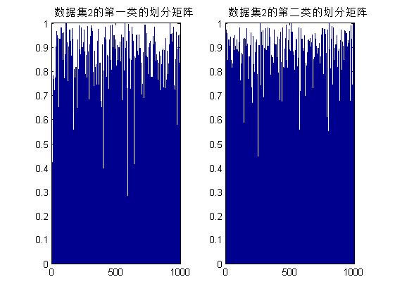
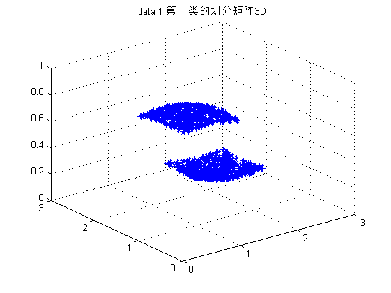
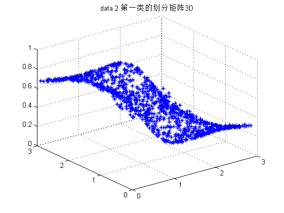
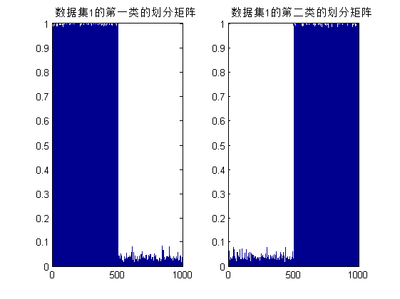
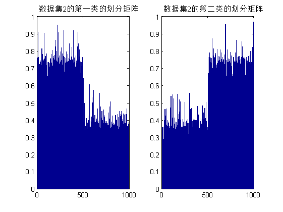
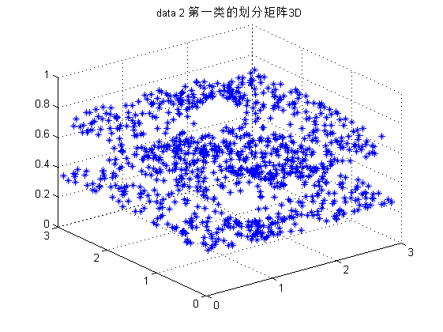

HC_fcm_test
HC_fcm:Horizontal Collaborative fcm by liyang @BNU Math 315 Email:farutoliyang@gmail.com 2009.09.25
Contents
清空环境变量和命令窗
clear; clc;
随机生成的数据
c = 2;
X = cell(1,2);
num = 500;
X{1} = [rand(num,2);(3-2)*rand(num,2)+2];
X{2} = 3*rand(2*num,2);
数据可视化
figure;
subplot(1,2,1);
plot(X{1}(:,1),X{1}(:,2),'*');
title('dataset 1');
subplot(1,2,2);
plot(X{2}(:,1),X{2}(:,2),'o');
title('dataset 2');
HC_fcm:Horizontal Collaborative fcm with alpha 协作矩阵都为0
% alpha 协作矩阵都为0 alpha = zeros(2,2); [U,V] = HC_fcm(X,c,alpha); figure; subplot(1,2,1); hold on; plot(X{1}(:,1),X{1}(:,2),'*'); plot(V{1}(:,1),V{1}(:,2),'ro'); title('dataset 1 with prototype'); hold off; subplot(1,2,2); hold on; plot(X{2}(:,1),X{2}(:,2),'*'); plot(V{2}(:,1),V{2}(:,2),'ro'); title('dataset 2 with prototype'); hold off; figure; subplot(1,2,1); bar(U{1}(1,:)); axis([0 2*num 0 1]); title('数据集1的第一类的划分矩阵'); subplot(1,2,2); bar(U{1}(2,:)); axis([0 2*num 0 1]); title('数据集1的第二类的划分矩阵'); figure; subplot(1,2,1); bar(U{2}(1,:)); axis([0 2*num 0 1]); title('数据集2的第一类的划分矩阵'); subplot(1,2,2); bar(U{2}(2,:)); axis([0 2*num 0 1]); title('数据集2的第二类的划分矩阵'); figure; for run = 1:2*num plot3(X{1}(run,1),X{1}(run,2),U{1}(1,run),'*'); hold on; end grid on; title('data 1 第一类的划分矩阵3D'); figure; for run = 1:2*num plot3(X{2}(run,1),X{2}(run,2),U{2}(1,run),'*'); hold on; end title('data 2 第一类的划分矩阵3D'); grid on;   
HC_fcm:Horizontal Collaborative fcm with alpha(2,1) ~= 0
% alpha(2,1) ~= 0 alpha(2,1) = 0.6; [U,V] = HC_fcm(X,c,alpha); figure; subplot(1,2,1); hold on; plot(X{1}(:,1),X{1}(:,2),'*'); plot(V{1}(:,1),V{1}(:,2),'ro'); title('dataset 1 with prototype'); hold off; subplot(1,2,2); hold on; plot(X{2}(:,1),X{2}(:,2),'*'); plot(V{2}(:,1),V{2}(:,2),'ro'); title('dataset 2 with prototype'); hold off; figure; subplot(1,2,1); bar(U{1}(1,:)); axis([0 2*num 0 1]); title('数据集1的第一类的划分矩阵'); subplot(1,2,2); bar(U{1}(2,:)); axis([0 2*num 0 1]); title('数据集1的第二类的划分矩阵'); figure; subplot(1,2,1); bar(U{2}(1,:)); axis([0 2*num 0 1]); title('数据集2的第一类的划分矩阵'); subplot(1,2,2); bar(U{2}(2,:)); axis([0 2*num 0 1]); title('数据集2的第二类的划分矩阵'); figure; for run = 1:2*num plot3(X{1}(run,1),X{1}(run,2),U{1}(1,run),'*'); hold on; end grid on; title('data 1 第一类的划分矩阵3D'); figure; for run = 1:2*num plot3(X{2}(run,1),X{2}(run,2),U{2}(1,run),'*'); hold on; end title('data 2 第一类的划分矩阵3D'); grid on;  